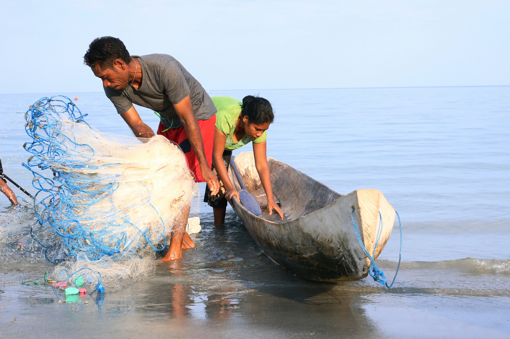
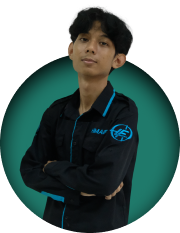

Restoring Bali's Harmony Through
Smart Waste Management
Inspired by Tri Hita Karana, uniting people, nature, and technology to restore balance in Bali.
Inspired by Tri Hita Karana, uniting people, nature, and technology to restore balance in Bali.
Di balik keindahan Bali, ada masalah sampah yang makin serius. Kondisi ini mulai berdampak ke alam, tempat suci, kesehatan masyarakat, sampai keseimbangan hidup masyarakat Bali.
Setiap hari Bali menghasilkan ribuan ton sampah, dan jumlahnya terus naik karena pariwisata dan perkembangan kota.
Hampir setengah sampah di Bali masih berakhir di pembuangan terbuka atau bocor ke lingkungan sekitar.
Sampah plastik yang masuk ke laut Bali setiap tahun mengancam ekosistem laut dan pariwisata pesisir.



Jutaan wisatawan datang setiap tahun, tapi kapasitas pengolahan sampah belum mampu mengimbangi.
Sungai yang melewati area pura mulai tercemar, mengganggu kesucian dan lingkungan sekitar.
Air yang tercemar dan pembuangan liar berdampak ke pertanian, perikanan, dan kesehatan masyarakat.
Kerusakan lingkungan juga mempengaruhi keseimbangan hidup yang menjadi bagian penting budaya Bali.
Langkah sederhana untuk melaporkan sampah dan membantu menjaga Bali tetap bersih secara real-time.
Ambil foto sampah langsung dari kamera atau unggah dari perangkat kamu.
Lokasi kamu akan terdeteksi otomatis melalui GPS, sehingga laporan langsung terpetakan dengan tepat.
Tentukan tindakan yang ingin kamu lakukan bersihkan sendiri atau kirim laporan agar petugas menanganinya.
Kirim laporan dan pantau status penanganannya secara langsung sampai selesai.
Langkah sederhana untuk melaporkan sampah dan membantu menjaga Bali tetap bersih secara real-time.
Laporan yang kamu kirim membantu mengurangi sampah di sekitar dan mencegah penumpukan yang bisa merusak lingkungan.
Petugas dapat langsung melihat lokasi dan detail laporan, sehingga proses penanganan bisa dilakukan lebih cepat dan tepat.
Setiap aksi yang kamu lakukan akan mendapatkan poin dan badge sebagai bentuk apresiasi atas kontribusimu menjaga lingkungan.
Kontribusimu tidak hanya membersihkan satu titik, tetapi juga membantu menjaga kebersihan dan keharmonisan lingkungan Bali secara bersama.
Pengalaman mereka yang ikut menjaga Bali tetap bersih.
"Melaporkan sampah mudah, dan penanganannya cepat. Lingkungan sekitar jadi lebih bersih."

"Bisa bersihkan sendiri atau lapor petugas. Selain membantu lingkungan, saya juga dapat poin."
Total Laporan Masuk
Laporan Terselesaikan
Sampah Tertangani
Warga Berkontribusi